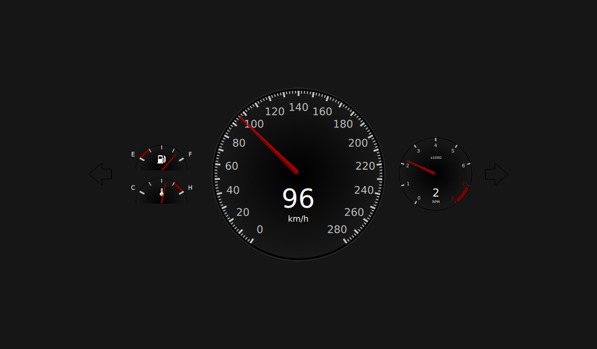

Qt Quick Extras - Dashboard
A car dashboard created using several CircularGauge controls.

This example project demonstrates the use of CircularGauge to create a car dashboard.
The ValueSource type generates random data for testing the dashboard. The data is random but there is a logical link between some of them, for example, kph and rpm.
Item { id: valueSource property real kph: 0 property real rpm: 1 property real fuel: 0.85 property string gear: { var g; if (kph == 0) { return "P"; } if (kph < 30) { return "1"; } if (kph < 50) { return "2"; } if (kph < 80) { return "3"; } if (kph < 120) { return "4"; } if (kph < 160) { return "5"; } } property int turnSignal: gear == "P" && !start ? randomDirection() : -1 property real temperature: 0.6 property bool start: true
It runs a looping SequentialAnimation that sets the values of the properties over time.
The SequentialAnimation object consists of several ParallelAnimation objects, which in turn consist of two NumberAnimations, one for kph and one for rpm. Both let the value develop to a certain value over a specified duration with the Easing type Easing.InOutSine
ParallelAnimation {
NumberAnimation {
target: valueSource
property: "kph"
easing.type: Easing.InOutSine
from: 0
to: 30
duration: 3000
}
NumberAnimation {
target: valueSource
property: "rpm"
easing.type: Easing.InOutSine
from: 1
to: 6.1
duration: 3000
}
}
The flashTimer object switches the turn signals on or off.
Timer {
id: flashTimer
interval: 500
running: on
repeat: true
onTriggered: flashing = !flashing
}
The paintOutlinePath(ctx) method does the actual painting of the arrow for the turn signal.
function paintOutlinePath(ctx) {
ctx.beginPath();
ctx.moveTo(0, height * 0.5);
ctx.lineTo(0.6 * width, 0);
ctx.lineTo(0.6 * width, height * 0.28);
ctx.lineTo(width, height * 0.28);
ctx.lineTo(width, height * 0.72);
ctx.lineTo(0.6 * width, height * 0.72);
ctx.lineTo(0.6 * width, height);
ctx.lineTo(0, height * 0.5);
}
The screen consists of a foregroundCanvas and a backgroundCanvas. foregroundCanvas displays the green turn signal if the on and flashing booleans are true.
Canvas {
id: foregroundCanvas
anchors.fill: parent
visible: on && flashing
onPaint: {
var ctx = getContext("2d");
ctx.reset();
paintOutlinePath(ctx);
ctx.fillStyle = "green";
ctx.fill();
}
}